Responsável: Bruno Ferreira Dornelas — Complementos de ideias legislativas · Autor do item: Bruno Ferreira Dornelas
Relato da avaliação do protótipo de papel¶
Tabela de contribuição¶
A Tabela 1 registra as contribuições neste artefato.
| Integrante / ferramenta | Contribuição | Artefato / atividade |
|---|---|---|
| Bruno Ferreira Dornelas | Desenho manual da moldura e dos recortes, condução do piloto e da sessão de validação, análise e redação | Método e execução |
| Luís Henrique Arruda Luna | Observação da sessão remota, análise conjunta das evidências e revisão do relato | Método e execução |
| Caio Breno de Souza Bezerra | Observação da sessão remota e apoio à consolidação dos achados | Método e execução |
| Israel Soares de Paiva | Observação da sessão remota | Método e execução |
| Antigravity (Google DeepMind) | Extração da transcrição das gravações, organização das tabelas de evidências e apoio à redação | Agradecimentos |
Tabela 1 — Contribuições no relato do protótipo de papel.
Fonte: elaboração do projeto (2026).
Introdução¶
Este relato apresenta os resultados da avaliação do protótipo em papel para sugerir e acompanhar complementos de ideias legislativas, conduzida em 03/11/2026 conforme o planejamento da avaliação e o planejamento do relato elaborados na Etapa 5. O recorte dá continuidade ao storyboard, à análise de tarefas HTA/CTT e às decisões consolidadas após os relatos do storyboard e das tarefas.
Na sessão principal (06min30s), a pessoa participante (PP-P01) percorreu sem dificuldade a pesquisa, a seleção da ideia legislativa antes da participação, o apoio inicial com autenticação simulada, o envio do complemento, a concordância com o ajuste do autor e a reconsulta à ideia publicada. Ao final, identificou-se uma dúvida de compreensão na tela de publicação (PP-S04): a ausência de identificação explícita de autoria da própria proponente junto ao botão de apoiar o complemento levou PP-P01 a questionar se aquele controle destinava-se a apoiar o complemento de outra pessoa ou o seu próprio.
Objetivos e escopo¶
- PP-O1: identificar dificuldades para localizar, preparar, revisar e enviar uma contribuição complementar preservando sua intenção.
- PP-O2: identificar problemas de compreensão das versões, responsabilidades, apoios separados e estados do acompanhamento até o encaminhamento à comissão.
- Escopo avaliado: pesquisa de ideias existentes, seleção da ideia para leitura de detalhes, autenticação simulada, preenchimento e envio de complemento, concordância diante do retorno do autor, consulta ao complemento publicado e visualização do estado encaminhado à Comissão de Direitos Humanos e Legislação Participativa (CDH), utilizando moldura fixa e recortes móveis em papel (
v1.0). - Limites do escopo: o ramo de discordância (
PP-X02) e a repetição de consulta sem atualização durante as esperas (PP-X01aePP-X01b) não foram percorridos na sessão; o estudo descreve um caso exploratório e não mede eficiência temporal, adoção cotidiana ou operação real do portal do Senado.
Item de conteúdo da disciplina¶
Autor do item: Bruno Ferreira Dornelas.
Na prototipação em papel, uma pessoa interage com representações desenhadas à mão indicando controles e dados, enquanto um avaliador opera as transições como “computador” e outros observam e anotam dificuldades (BARBOSA; SILVA, 2010, p. 358–362 [1]; capítulo enviado [2], p. 318–319). O relato deve documentar objetivos, participantes, tarefas executadas, problemas corrigidos durante os ciclos com indicação de recorrência e problemas pendentes priorizados por gravidade e frequência. As Figuras 1 e 2 reproduzem a fundamentação utilizada nos planejamentos.
Figura 1 — Operação, interpretação e consolidação na prototipação em papel

Figura 1 — Operação e interpretação conjunta na prototipação em papel.
Fonte: capítulo Métodos de avaliação de IHC enviado ao projeto [2], p. 318 (correspondente a Barbosa e Silva, 2010, p. 360–361 [1]).
Figura 2 — Conteúdo do relato: problemas corrigidos, recorrência e pendências

Figura 2 — Relato de problemas corrigidos e pendentes no protótipo de papel.
Fonte: capítulo Métodos de avaliação de IHC enviado ao projeto [2], p. 319 (correspondente a Barbosa e Silva, 2010, p. 361–362 [1]).
Método, material e execução¶
Participantes e papéis na coleta¶
A Tabela 2 sintetiza a equipe e as condições efetivas da coleta realizada em 03/11/2026, pelo Google Meet.
| Papel / condição | Registro efetivo na execução |
|---|---|
| Operador do papel e moderador | Bruno Ferreira Dornelas |
| Observadores na sessão remota | Luís Henrique Arruda Luna, Caio Breno de Souza Bezerra e Israel Soares de Paiva |
| Revisor do relato | Luís Henrique Arruda Luna |
Participante principal (PP-P01) |
Estudante, usuário de computador e celular; sem participação nas entrevistas da Etapa 5 |
| Teste-piloto / ensaio operacional | Gravado por Bruno em 03/11/2026 (03min38s), antes da sessão com PP-P01 |
| Modalidade e versão avaliada | Google Meet com câmera voltada para a mesa; material modular em papel v1.0 |
Tabela 2 — Equipe, participante e condições da sessão.
Fonte: registros da coleta de 03/11/2026.
Caracterização: Na caracterização inicial respondida antes do início das tarefas, PP-P01 (estudante) relatou utilizar computador e celular e já ter considerado sugerir uma mudança legislativa no portal, desistindo ao encontrar várias ideias parecidas com a sua — nenhuma idêntica — sem possibilidade de propor um ajuste ou somar embasamento com seus conhecimentos a uma proposta existente, o que o desestimulou de criar uma nova ideia do zero sujeita à meta de 20 mil apoios. Ao pesquisar novamente o assunto no portal algum tempo depois, percebeu que apenas uma daquelas propostas semelhantes havia alcançado os 20 mil apoios, aparentando não ter avançado posteriormente, e apontou a ausência de avisos por e-mail sobre as ideias apoiadas como principal obstáculo para retornar e acompanhar resultados.
Questões éticas: O consentimento para gravação foi confirmado no início da sessão (00:18–00:24), enquadrando apenas as folhas sobre a mesa, sem exposição facial. Embora o prenome do participante tenha sido pronunciado na saudação inicial da gravação, este relato utiliza exclusivamente o código PP-P01, mantendo dados de identificação fora do texto público e preservando o compromisso de exclusão dos arquivos brutos em até 30 dias após o encerramento da disciplina.
Material construído (v1.0) — Moldura fixa e recortes móveis¶
Seguindo a orientação de Barbosa e Silva (2010, p. 358 [1]) para preparação de estrutura estática combinada a pedaços de papel móveis, o protótipo v1.0 foi construído com 1 folha-base fixa (PP-B01) representando o cabeçalho do Portal e-Cidadania e 10 recortes móveis sobrepostos na área central conforme as ações de PP-P01. A Tabela 3 documenta as 11 peças fotografadas antes da sessão, e a Figura 3 reúne os registros visuais preservados no repositório.
| Código / Peça | Função no fluxo e vínculo com o planejamento | Arquivo fotográfico |
|---|---|---|
PP-B01 (Moldura fixa) |
Cabeçalho e-Cidadania, menu (Sobre, Ideia Legislativa, Evento Interativo, Consulta Pública, Oficina Legislativa) e quadro central para encaixe dos recortes |
20261103_215327.jpg |
PP-S01-busca |
Recorte inicial da barra de pesquisa em branco (Encontre as ideias que você procura: [___] [BUSCAR]) |
20261103_215348.jpg |
PP-S01a |
Lista de resultados para "Bibliotecas comunitárias", exibindo "Incentivo às bibliotecas comunitárias" (60%, 12.343 apoios confirmados, meta 20.000, Apoios abertos até 5 de janeiro de 2027) e uma segunda ideia encerrada (9.110 apoios), sem botões diretos de apoio ou complemento na listagem |
20261103_215359.jpg |
PP-S01b |
Página da ideia selecionada (Incentivo às bibliotecas comunitárias), com barra de 60%, botão [APOIAR ESTA IDEIA], aviso "Ainda não há complementos para essa ideia", botão [SUGERIR COMPLEMENTO A ESTA IDEIA] e "Linha do tempo" |
20261103_215411.jpg |
PP-X-login |
Cartão modal de autenticação simulada (Para participar, acesse com sua conta gov.br — [Entrar com gov.br]) |
20261103_215424.jpg |
PP-S02 |
Formulário de sugestão de complemento com link <- Voltar para a ideia selecionada, explicação da ordem (Fluxo: 1. autor analisa -> 2. sua decisão -> 3. moderação), campos 1. Título / ponto principal do complemento e 2. Texto e justificativa da contribuição, e botões [Editar] e [Confirmar envio ao autor] |
20261103_215436.jpg |
PP-X01a |
Tira de estado de espera após o envio: "AGUARDANDO ANALISE DO AUTOR — Próximo passo depende do autor antes de ir a moderação" |
20261103_215500.jpg |
PP-S03 |
Tela de retorno do autor (Compare as duas versões:), com quadros lado a lado (Seu texto enviado / Autor: e Ajuste proposto pelo autor / Autor da ideia:) e botões [Concordar com o ajuste e enviar para moderação] e [Não concordar com o ajuste] |
20261103_215530.jpg |
PP-X01b |
Tira de estado pós-concordância: "AGUARDANDO MODERAÇÃO DO PORTAL — Você concordou com o ajuste. Aguardando liberação da moderação" |
20261103_215542.jpg |
PP-S04 |
Página da ideia com o complemento publicado (1. Incentivar atendimento noturno conforme demanda, [40 apoios], botão [Apoiar este complemento] e observação sobre ausência de garantia de implementação automática) |
20261103_215554.jpg |
PP-S05 |
Estado atualizado após a meta: "STATUS: Encaminhada para análise na Comissão (CDH)", aviso de que o envio encerra a coleta de apoios mas não garante aprovação automática, "1. Ideia legislativa principal (Autor: Carlos Mendes)" e "2. Anexos consultivos: Anexo consultivo 1: Atendimento noturno" |
20261103_215602.jpg |


Tabela 3 — Inventário das folhas e recortes construídos na versão v1.0.
Fonte: acervo fotográfico da preparação do protótipo (03/11/2026).
Figura 3 — Fotografias da moldura fixa e dos recortes móveis utilizados (v1.0)
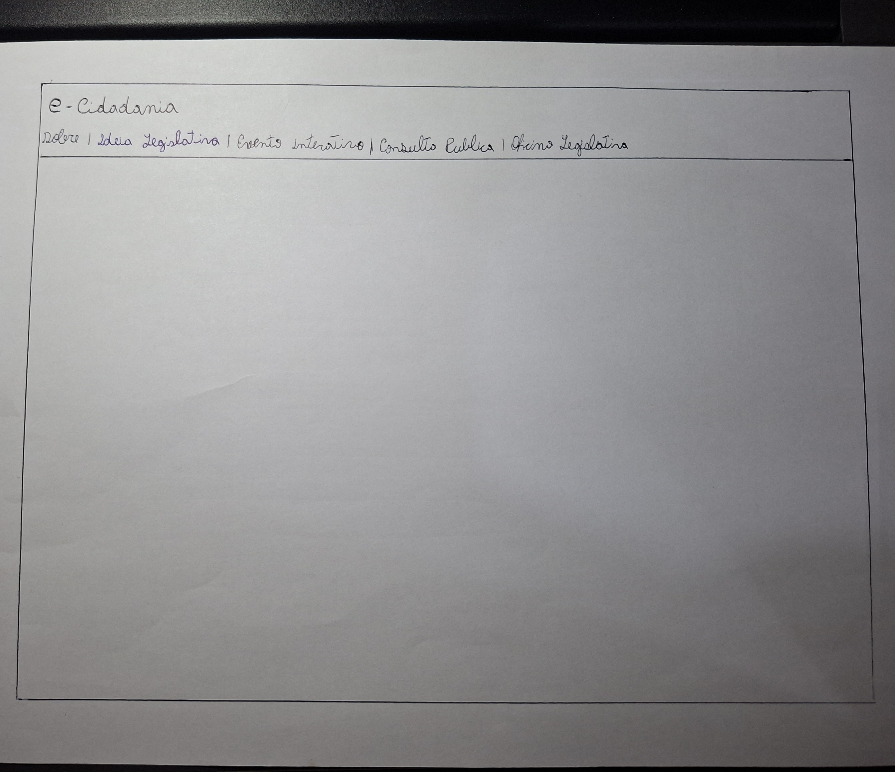 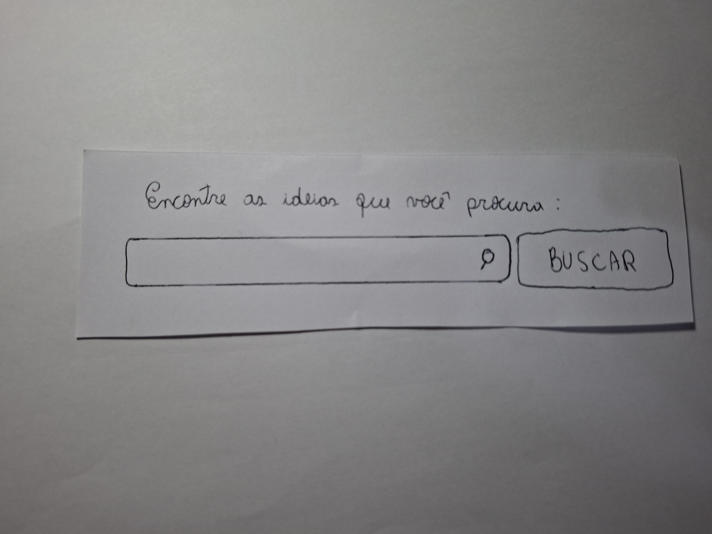 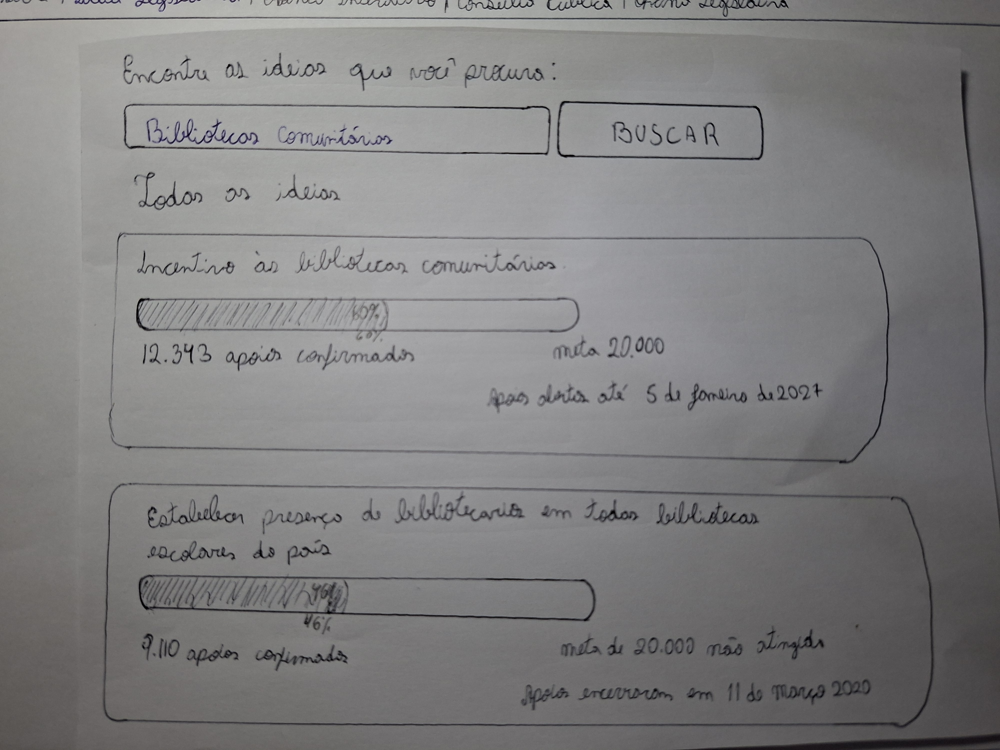 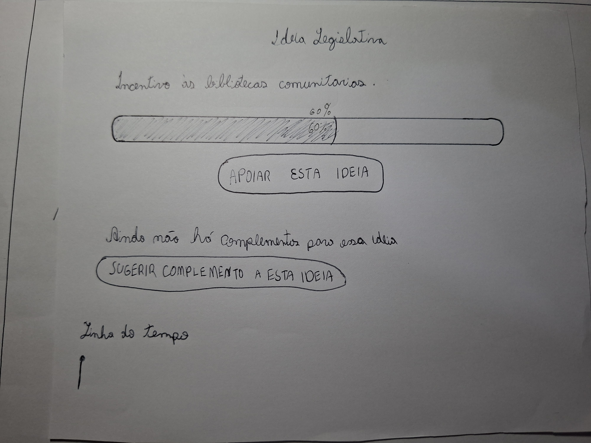 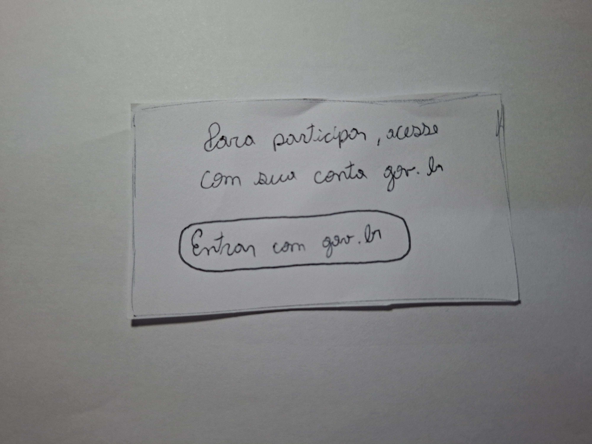 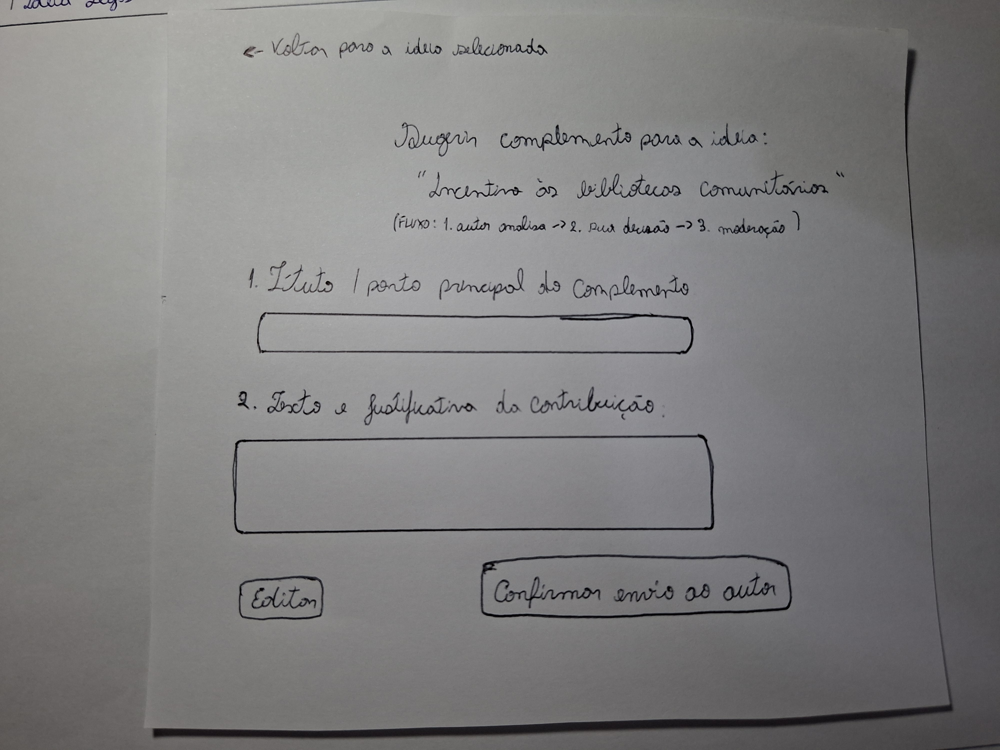 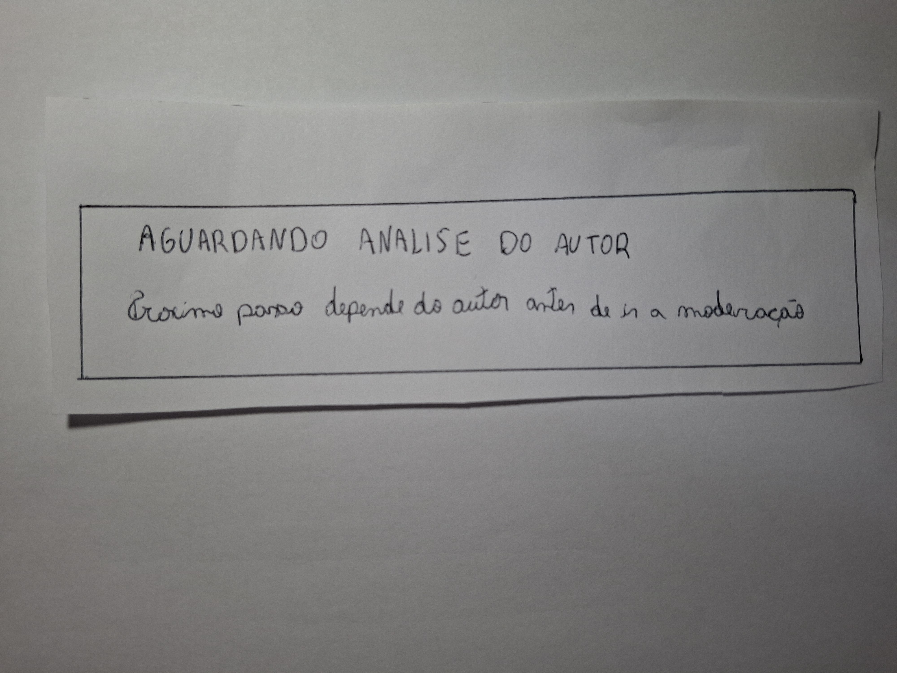 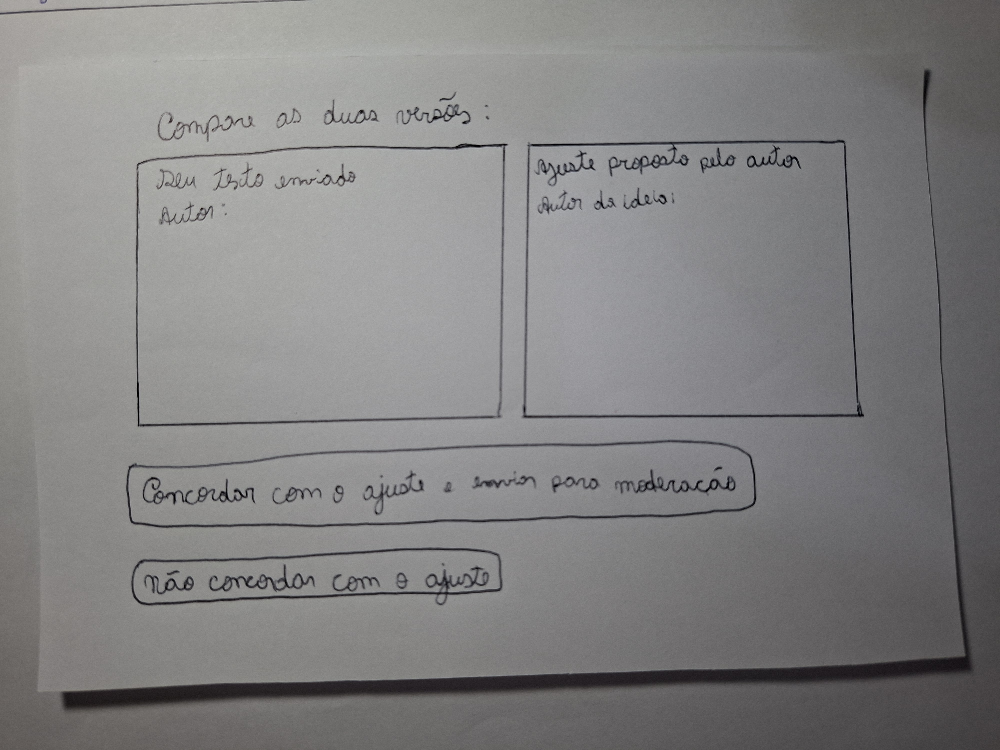 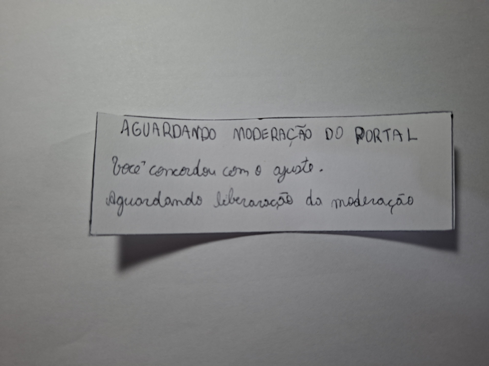 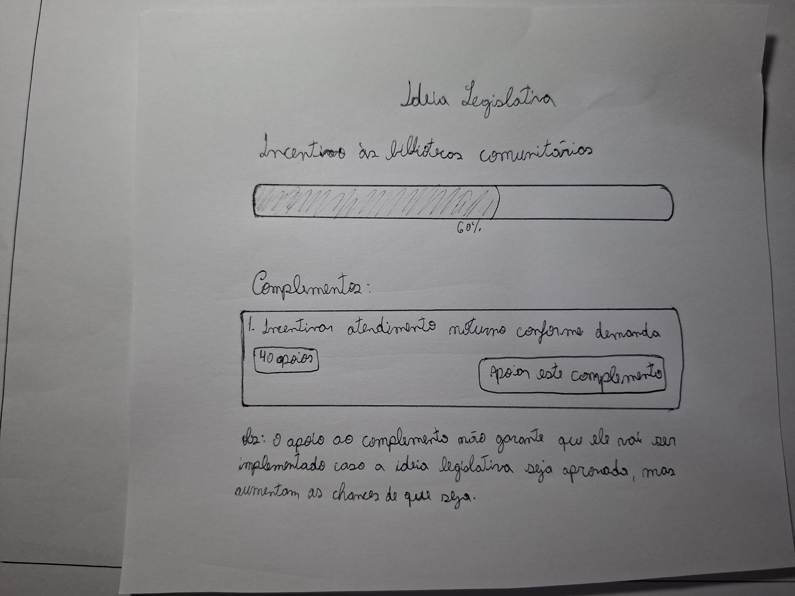 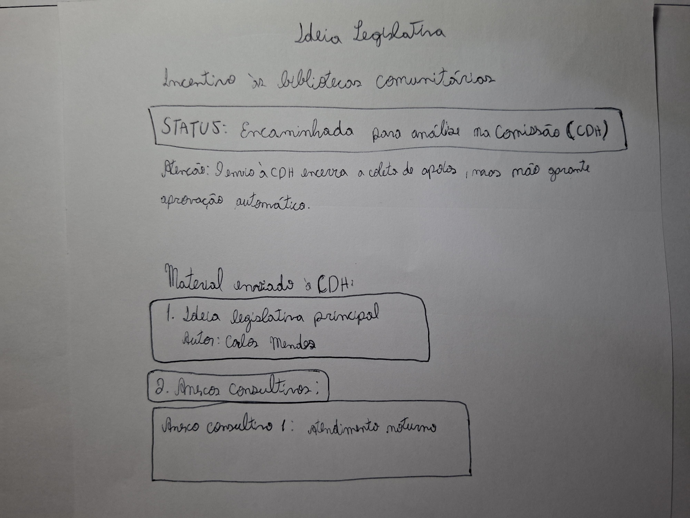
Figura 3 — Peças desenhadas à mão para a versão v1.0 do protótipo de papel.
Fonte: elaboração de Bruno Ferreira Dornelas (03/11/2026).
Teste-piloto / ensaio operacional prévio¶
Antes da sessão com PP-P01, Bruno realizou e gravou um ensaio operacional do protótipo em 03/11/2026 (03min38s, Vídeo 1) para inspecionar o enquadramento da câmera sobre a moldura fixa, a legibilidade da caligrafia em vídeo e a ordem de sobreposição das 11 peças (PP-S01-busca a PP-S05). Como desvio em relação ao planejamento — que previa um participante externo e o segundo avaliador já no piloto —, o ensaio foi executado individualmente pelo operador percorrendo em voz alta todas as transições das quatro tarefas (00:11–03:32). Os dados desse ensaio não integram a análise de resultados de PP-P01.
Vídeo 1 — Teste-piloto / ensaio operacional do protótipo de papel — 03/11/2026
Vídeo 1 — Verificação prévia das folhas e transições do protótipo de papel (03min38s).
Fonte: gravação de Bruno Ferreira Dornelas (03/11/2026).
Abrir gravação do teste-piloto no YouTube.
Tarefas executadas e sumário de evidências¶
A gravação da sessão principal com PP-P01 possui 06min30s (Vídeo 2). A Tabela 4 registra o resultado de cada tarefa segundo os critérios definidos no planejamento do relato, e a Tabela 5 detalha as evidências (PP-EV01 a PP-EV09) com localizadores exatos no vídeo.
Vídeo 2 — Sessão de validação do protótipo de papel com PP-P01 — 03/11/2026
Vídeo 2 — Validação do protótipo de papel com PP-P01 (06min30s).
Fonte: gravação da sessão remota no Google Meet (03/11/2026), disponibilizada com autorização.
Abrir gravação da validação no YouTube.
| Tarefa | Estado / material efetivo | Resultado | Evidências, ajuda e desvios observados |
|---|---|---|---|
| PP-T1 — Localizar ideia e decidir como participar | PP-B01 + PP-S01-busca → PP-S01a → PP-S01b → PP-X-login → PP-S01b |
Concluída sem ajuda | PP-EV02, PP-EV03. Pesquisou na barra de busca (01:08), selecionou primeiro a ideia na lista de resultados (01:31), decidiu apoiar a ideia original antes (01:55), autenticou-se no cartão gov.br (02:10) e acionou [Sugerir complemento a esta ideia] (02:21). |
| PP-T2 — Redigir, revisar e enviar | PP-S02 → PP-X01a |
Concluída parcialmente (desvio de condução na espera) | PP-EV04, PP-EV05. Indicou preenchimento de título e texto e confirmou o envio sem ajuda (02:36–02:44). Ao exibir PP-X01a (02:55), o operador antecipou tratar-se de uma tela de transição na qual não havia ação a realizar, suprimindo a etapa de nova consulta sem atualização. |
| PP-T3 — Examinar ajuste e decidir | PP-S03 → PP-X01b |
Concluída sem ajuda (no ramo de concordância) | PP-EV06. Diante da comparação em PP-S03, escolheu concordar com o ajuste e enviar para a moderação (03:13–03:17), visualizando PP-X01b. Não foi solicitada justificativa sobre a diferença textual antes da transição; o ramo PP-X02 não foi percorrido (não avaliado). |
| PP-T4 — Conferir publicação e encaminhamento | PP-S01a → PP-S04 → PP-S05 |
Concluída com ajuda / explicação do moderador e dúvida de autoria | PP-EV07, PP-EV08, PP-EV09. Reabriu a ideia (04:10) e clicou em [Apoiar este complemento] em PP-S04 (04:25), revelando ao final (06:01–06:12) dúvida sobre se aquele botão referia-se ao complemento de outra pessoa ou ao seu próprio. Em PP-S05 (04:31–04:53), o moderador anunciou o alcance dos 20.000 apoios antes de colher interpretação espontânea. |
Tabela 4 — Registro das tarefas executadas na sessão principal.
Fonte: análise da gravação de 03/11/2026.
| ID | Tarefa / tela | Questão DECIDE | Localizador no vídeo | Ação, retorno e fala verificável ou paráfrase | Intervenção / ajuda do avaliador |
|---|---|---|---|---|---|
| PP-EV01 | Abertura e consentimento | Ética | 00:01–00:24 | Bruno apresenta o objetivo de validar o protótipo em papel e solicita autorização para gravar; PP-P01 concorda (“Sim, sim”, 00:23). |
Pergunta direta de consentimento antes da instrução. |
| PP-EV02 | PP-T1 / PP-S01-busca → PP-S01a |
PP-Q1 |
00:41–01:22 | Após ouvir a proposta da tarefa, PP-P01 inicia pela barra de pesquisa: “Primeiro eu vou tentar escrever alguma coisa ali na barra de busca, né, para buscar realmente” (01:08–01:13). |
Na instrução inicial (00:41–00:55), o moderador já menciona procurar ideia sobre bibliotecas comunitárias e sugerir um complemento. |
| PP-EV03 | PP-T1 / PP-S01a → PP-S01b → PP-X-login |
PP-Q1 |
01:31–02:23 | PP-P01 seleciona a primeira ideia nos resultados (“Eu posso clicar nessa primeira ideia?”, 01:31), opta primeiro por apoiar a ideia original (01:55), clica em entrar com gov.br (02:10) e em seguida aciona “sugerir um complemento para essa ideia” (02:21–02:23). |
Sem ajuda para localizar controles; em 02:15 o operador confirma verbalmente que o participante já está logado. |
| PP-EV04 | PP-T2 / PP-S02 |
PP-Q2 |
02:36–02:44 | No formulário de complemento, PP-P01 indica o preenchimento de título e texto/justificativa e aciona “confirmar o envio” (02:36–02:44). |
Sem ajuda. |
| PP-EV05 | PP-T2 / PP-X01a |
PP-Q2, PP-Q4 |
02:55–03:00 | Diante da tira PP-X01a (Aguardando análise do autor), PP-P01 apenas concorda com a passagem (03:00). |
Explicação antecipada do operador (02:55–02:58): informa que é uma tela de transição em que não há muito o que fazer, impedindo observar reação espontânea ou nova consulta sem atualização. |
| PP-EV06 | PP-T3 / PP-S03 → PP-X01b |
PP-Q3, PP-Q4 |
03:13–03:36 | Ao examinar PP-S03, PP-P01 decide: “Vou concordar com esse ajuste e enviar para a moderação” (03:13–03:17), recebendo em seguida a tira PP-X01b (Aguardando moderação do portal). |
Escolha do controle sem ajuda; não foi perguntado o motivo da concordância nem o efeito do ajuste sobre a intenção inicial. |
| PP-EV07 | PP-T4 / PP-S01a → PP-S04 |
PP-Q5, PP-Q6 |
03:39–04:25 | Após orientação para verificar como ficou o complemento na página da ideia, PP-P01 clica na mesma ideia que havia complementado (04:10–04:14) e, ao visualizar PP-S04, declara: “Beleza, eu vou apoiar esse complemento” (04:25). |
Em 03:39–04:05, o moderador contextualiza o retorno à busca para consultar se o complemento foi aprovado. |
| PP-EV08 | PP-T4 / PP-S05 |
PP-Q6 |
04:31–04:53 | O operador apresenta PP-S05 e PP-P01 confirma a visualização (04:53). |
Explicação prévia do moderador (04:31–04:46): anuncia que o cenário mostra o resultado após passar um tempo e atingir mais de 20.000 apoios, sem solicitar leitura espontânea do anexo consultivo ou do aviso da CDH. |
| PP-EV09 | Entrevista pós-teste (PP-S04 e fluxo geral) |
PP-Q1–PP-Q5 |
05:05–06:20 | PP-P01 afirma que o fluxo estava intuitivo e bem explicado (05:19–05:57), mas relata uma dúvida específica sobre PP-S04: “Só tive dúvida no final, estava em que aparecer lá a opção de apoiar o complemento. Era justamente para esse complemento aí de outra pessoa?” (06:01–06:12). |
Perguntas abertas pós-teste (05:05, 05:45); em 06:15–06:17, o moderador esclarece que se tratava do próprio complemento enviado pelo participante. |
Tabela 5 — Evidências localizáveis da sessão com PP-P01.
Fonte: transcrição e análise da gravação de 03/11/2026.
Análise e respostas às perguntas de avaliação (DECIDE)¶
A Tabela 6 responde às questões PP-Q1 a PP-Q6 do planejamento da avaliação com base exclusiva nas evidências observadas.
| Questão de avaliação | Resposta analítica | Evidências | Limites e encaminhamento |
|---|---|---|---|
PP-Q1 — A pessoa encontra uma ideia pertinente e distingue complementar de criar outra ideia? (PP-O1) |
PP-P01 localizou a barra de pesquisa, identificou a proposta "Incentivo às bibliotecas comunitárias" na listagem PP-S01a, abriu primeiro a página da ideia (PP-S01b), realizou o apoio inicial à proposta principal e em seguida acionou [Sugerir complemento a esta ideia]. Na caracterização prévia, também relatou já ter desistido de participar no portal justamente por não existir meio de ajustar ou complementar propostas semelhantes já abertas. |
Caracterização inicial; PP-EV02, PP-EV03 |
Como a instrução verbal inicial (00:41–00:55) já mencionou sugerir um complemento, a preferência espontânea entre criar nova ideia e complementar uma existente deve ser verificada na alta fidelidade sem antecipar o nome do controle no enunciado. |
PP-Q2 — Consegue redigir, revisar e enviar a contribuição, reconhecendo a confirmação? (PP-O1) |
Em PP-S02, PP-P01 compreendeu imediatamente os campos de título e justificativa e acionou [Confirmar envio ao autor] sem hesitação (02:36–02:44), visualizando em seguida a tira de confirmação PP-X01a. |
PP-EV04, PP-EV05, PP-EV09 |
Os textos fictícios não chegaram a ser manuscritos no papel durante a sessão e a revisão com o botão [Editar] não foi exercitada; no protótipo de alta fidelidade, exigir preenchimento/seleção efetiva e conferência antes do envio (AF-T2). |
PP-Q3 — Compara versões e decide sobre o ajuste preservando sua intenção? (PP-O1/PP-O2) |
Ao receber PP-S03, PP-P01 identificou as opções de decisão e escolheu [Concordar com o ajuste e enviar para moderação] (03:13–03:17). Contudo, como os quadros de comparação em PP-S03 continham apenas os cabeçalhos (Seu texto enviado vs. Ajuste proposto pelo autor) sem a redação literal preenchida dentro das caixas (20261103_215530.jpg), não há evidência de que o participante tenha avaliado o efeito semântico da restrição proposta pelo autor sobre sua intenção inicial. |
PP-EV06; foto de PP-S03 |
Preencher integralmente os dois textos comparados na interface de alta fidelidade e incluir pergunta pós-tarefa imediata sobre a diferença percebida e o caminho de discordância (PP-X02). |
PP-Q4 — Distingue ações próprias, retorno do autor e moderação, reconhecendo quem pode agir durante as esperas? (PP-O2) |
Na entrevista pós-teste (05:45–05:57), PP-P01 declarou ter compreendido a sequência entre apoiar a ideia, sugerir o complemento e aguardar aprovação, apoiado pelos rótulos explícitos em PP-S02, PP-X01a e PP-X01b. Todavia, a intervenção do operador em 02:55–02:58 classificando PP-X01a como tela de transição sem ação possível impediu verificar se o participante reconheceria autonomamente de quem dependia o próximo passo durante uma consulta sem atualização. |
PP-EV05, PP-EV06, PP-EV09 |
Evitar intervenções explicativas nas telas de espera durante a avaliação de alta fidelidade e incluir aviso claro de notificação por e-mail sobre mudanças de etapa. |
PP-Q5 — Distingue ideia original, complemento e respectivos apoios? (PP-O2) |
PP-P01 distinguiu o ato de apoiar a ideia principal (01:55 em PP-S01b) do ato de sugerir e visualizar o complemento (02:21 e 04:25). Entretanto, ao encontrar o botão [Apoiar este complemento] habilitado ao lado de [40 apoios] em PP-S04 sem indicação de que aquele item era de sua própria autoria, acionou o botão (04:25) e questionou no pós-teste se estava diante do complemento de outra pessoa (06:01–06:12). |
PP-EV03, PP-EV07, PP-EV09; foto de PP-S04 |
Identificar explicitamente a autoria no card do complemento publicado (Autora: Letícia Oliveira — Seu complemento) e diferenciar o estado do botão para a própria autora em relação a complementos de terceiros. |
PP-Q6 — Distingue publicação e encaminhamento, reconhece o término do acompanhamento proposto e interpreta o envio para análise sem confundi-lo com aprovação legislativa? (PP-O2) |
As folhas PP-S04 e PP-S05 separaram visualmente o estado publicado em coleta de apoios (60%) do estado "Encaminhada para análise na Comissão (CDH)" com "Anexo consultivo 1: Atendimento noturno" e o aviso de que o envio encerra a coleta de apoios sem garantir aprovação automática. Contudo, como o moderador apresentou PP-S05 já explicando o resultado após os 20.000 apoios (04:31–04:46), os dados são insuficientes para comprovar a interpretação espontânea de PP-P01 sobre essa distinção sem ajuda. |
PP-EV07, PP-EV08; fotos de PP-S04 e PP-S05 |
Na avaliação de alta fidelidade (AF-T4), solicitar que a pessoa explique o significado de PP-S04 e de PP-S05 antes de qualquer síntese verbal do moderador. |
Tabela 6 — Matriz de análise do DECIDE para o protótipo de papel.
Fonte: interpretação conjunta dos registros da sessão de 03/11/2026.
Rastreabilidade em relação às decisões da Etapa 5¶
A Tabela 7 confronta as quatro decisões de design originadas nos relatos das entrevistas de 24/10/2026 (Tabela 6 do planejamento) com o que foi efetivamente construído nas folhas e observado na sessão de 03/11/2026.
| Origem na Etapa 5 | Decisão implementada no papel (v1.0) |
Evidência observada em 03/11/2026 | Encaminhamento para a alta fidelidade |
|---|---|---|---|
| A01 — Decisão da proponente pouco explícita sobre o ajuste do autor | PP-S03 incluiu dois quadros lado a lado e os botões [Concordar com o ajuste e enviar para moderação] e [Não concordar com o ajuste]. |
PP-EV06: PP-P01 selecionou espontaneamente concordar (03:13), mas as caixas de texto estavam sem a redação detalhada preenchida e o ramo PP-X02 não foi testado. |
Exibir os dois textos completos com grifo na alteração proposta e criar tela/modal funcional para o ramo PP-X02 (não concordar). |
| AT-A01 e A02 — Publicação tomada como término; apoios separados e desfecho não verificados | PP-S04 apresentou o complemento publicado com [40 apoios] e observação sobre não garantir implementação; PP-S05 apresentou o status "Encaminhada para análise na Comissão (CDH)", aviso de não aprovação automática e "Anexo consultivo 1: Atendimento noturno". |
PP-EV07–09: PP-P01 teve dúvida sobre a autoria do complemento em PP-S04 (06:01–06:12), e PP-S05 foi precedida de explicação do moderador (04:31–04:46). |
Rotular claramente a autoria no card do complemento, exibir contadores absolutos em ambos os textos (12.343 / 20.000 vs. 40 apoios) e colher leitura espontânea de PP-S05. |
A03 e AT-A03 — Ordem ambígua entre avaliação do autor e moderação no QD04 |
PP-S02 explicitou "Fluxo: 1. autor analisa -> 2. sua decisão -> 3. moderação", reforçado pelas tiras PP-X01a e PP-X01b. |
PP-EV05, PP-EV06, PP-EV09: ordem consistente em todo o material construído; PP-P01 declarou clareza no fluxo (05:45–05:57). |
Manter a barra de etapas numerada (1. Autor -> 2. Sua decisão -> 3. Moderação -> 4. Publicado) em todas as telas do fluxo de alta fidelidade. |
| AT-A02 — Lacunas de contexto inicial, responsabilidades nas esperas e exceções | Caracterização inicial aplicada com 4 perguntas abertas; tiras PP-X01a e PP-X01b desenhadas com indicação do responsável pela etapa. |
Caracterização inicial trouxe evidência concreta sobre desistência diante da meta de 20.000 apoios e falta de avisos por e-mail; na sessão, PP-X01a foi abreviada pelo operador (02:55). |
Incorporar aviso de notificação por e-mail nas telas de espera e observar a consulta de acompanhamento sem antecipar que se trata de tela estática. |
Tabela 7 — Rastreabilidade entre achados da Etapa 5, protótipo de papel e alta fidelidade.
Fonte: elaboração do projeto (2026).
Problemas corrigidos e problemas pendentes¶
Seguindo Barbosa e Silva (2010, p. 361–362 [1]), os problemas identificados foram divididos entre problemas corrigidos no protótipo em papel (Tabela 8) e problemas pendentes / decisões de reprojeto para o protótipo de alta fidelidade (Tabela 9).
Problemas corrigidos no protótipo de papel¶
| ID e local | Fator de usabilidade afetado | Descrição e justificativa do problema | Correção realizada no protótipo em papel (v1.0) |
Estado de recorrência após a correção |
|---|---|---|---|---|
PP-C01 — PP-S01a e PP-S01b (Pesquisa e seleção da ideia) |
Condução da interação e prevenção de erro (compreensão prévia do objeto da contribuição) | No esboço inicial da tela de busca (PP-S01), os botões de apoiar e sugerir complemento ficavam diretamente no card resumido da lista de resultados, permitindo enviar um complemento sem sequer clicar na ideia legislativa para ler seu conteúdo e verificar complementos existentes (operação 1.2 da HTA). |
A etapa inicial foi dividida nos recortes PP-S01a (lista de resultados da busca apenas com os cards das ideias encontradas, 20261103_215359.jpg) e PP-S01b (detalhes da ideia selecionada com barra de progresso, aviso de complementos e botões [APOIAR ESTA IDEIA] e [SUGERIR COMPLEMENTO A ESTA IDEIA], 20261103_215411.jpg), sobrepostos à moldura fixa PP-B01. |
Reavaliado, não observado nessa condição: em PP-EV03 (01:31–01:35), PP-P01 selecionou espontaneamente a primeira ideia na lista para abrir PP-S01b antes de apoiar (01:55) e sugerir complemento (02:21). |
PP-C02 — PP-S02, PP-X01a e PP-X01b (Ordem entre autor e moderação) |
Compreensão do estado do sistema e das responsabilidades (A03 e AT-A03) |
Na conferência documental da Etapa 5, o QD04 do storyboard deixava ambíguo se a moderação ocorria antes ou depois da análise do autor da ideia e da decisão da proponente sobre o ajuste. |
Foi incluída em PP-S02 (20261103_215436.jpg) a legenda explícita "Fluxo: 1. autor analisa -> 2. sua decisão -> 3. moderação", acompanhada das tiras distintas PP-X01a (AGUARDANDO ANALISE DO AUTOR — Próximo passo depende do autor antes de ir a moderação, 20261103_215500.jpg) e PP-X01b (AGUARDANDO MODERAÇÃO DO PORTAL, 20261103_215542.jpg). |
Reavaliado parcialmente: a inconsistência documental foi eliminada nas folhas e PP-P01 relatou clareza sobre a sequência (05:45–05:57), mas a compreensão autônoma durante a espera permanece dependente de teste sem intervenção do moderador (PP-A03). |
Tabela 8 — Problemas corrigidos no protótipo em papel e verificação de recorrência.
Fonte: registros de construção (`v1.0`), teste-piloto e sessão principal de 03/11/2026.
Problemas pendentes e encaminhamento para o protótipo de alta fidelidade¶
| ID e local | Fator afetado e natureza | Descrição, justificativa e evidência (gravidade e frequência) | Prioridade | Sugestão de correção e destino na alta fidelidade |
|---|---|---|---|---|
PP-A01 — PP-S04 (20261103_215554.jpg, card de complemento publicado) |
Compreensão do significado dos elementos e identificação de autoria (Problema de interface) | O card do complemento publicado em PP-S04 exibe "1. Incentivar atendimento noturno conforme demanda", [40 apoios] e o botão ativo [Apoiar este complemento], sem informar o nome da autora (Letícia Oliveira) nem indicar que se trata da contribuição enviada pela própria usuária logada. Como consequência, PP-P01 acionou [Apoiar este complemento] em 04:25 (PP-EV07) e, ao final (06:01–06:12, PP-EV09), perguntou se aquele botão servia para apoiar o complemento de outra pessoa. Ocorrência: 1/1 oportunidade observada. |
Alta | Exibir no card do complemento publicado a identificação explícita da proponente (Autora: Letícia Oliveira) acompanhada do selo Seu complemento publicado, diferenciando o controle exibido para a própria autora (ex.: indicar "Seu apoio já está contabilizado" ou separar visualmente um segundo complemento de terceiro caso se deseje testar apoio a complementos de outros cidadãos em AF-T4). Responsável: Bruno; implementar no protótipo de alta fidelidade antes da Etapa 7. |
PP-A02 — PP-S03 (20261103_215530.jpg) e ausência do cartão PP-X02 |
Completude da representação e controle do usuário sobre a preservação da intenção (Limitação do material em papel) | Na folha PP-S03, os dois quadros comparativos apresentaram apenas os títulos "Seu texto enviado / Autor:" e "Ajuste proposto pelo autor / Autor da ideia:", sem os textos completos escritos dentro das caixas para leitura comparativa, e o cartão móvel do ramo de discordância (PP-X02) não chegou a ser confeccionado. Em PP-EV06 (03:13–03:17), PP-P01 clicou diretamente em concordar sem que pudesse contrastar a redação literal na folha. Ocorrência: 1/1 oportunidade na sessão. |
Alta | Preencher integralmente no protótipo de alta fidelidade os dois blocos comparativos (Texto original enviado por Letícia Oliveira vs. Ajuste sugerido por Carlos Mendes: "...conforme a demanda da comunidade e as condições de cada biblioteca"), destacar visualmente o trecho alterado e implementar o estado interativo correspondente ao botão [Não concordar com o ajuste] (PP-X02, decisão em aberto com registro de motivo). Responsável: Bruno. |
PP-A03 — PP-X01a, PP-X01b e acompanhamento pós-envio |
Previsibilidade do acompanhamento assíncrono e condução do teste (Interface e procedimento) | Na caracterização inicial, PP-P01 apontou a ausência de notificações por e-mail como principal dificuldade para retornar ao portal e consultar o desfecho de uma proposta. Além disso, as tiras PP-X01a (20261103_215500.jpg) e PP-X01b (20261103_215542.jpg) não exibiam aviso de envio de e-mail nem controle de nova consulta, levando o operador a abreviar a tela em 02:55–02:58 (PP-EV05). |
Média | Acrescentar nas telas de espera (PP-X01a e PP-X01b) da alta fidelidade um indicador de notificação ativa por e-mail ("Você receberá um aviso no seu e-mail cadastrado assim que o autor / a moderação responder"), um botão de [Consultar status novamente] e a regra de protocolo para que o moderador aguarde a leitura espontânea da pessoa sem anunciar que é apenas uma tela de transição. Responsável: Bruno. |
PP-A04 — PP-S04 e PP-S05 (20261103_215554.jpg e 20261103_215602.jpg) |
Clareza comparativa dos contadores e verificação espontânea do encaminhamento (Interface e condução) | Em PP-S04, a ideia principal mostrava apenas 60% na barra, sem repetir o número absoluto de apoios (12.343 / 20.000) ao lado dos [40 apoios] do complemento; em PP-S05, o Anexo Consultivo 1 não repetia os 40 apoios preservados nem o texto acordado, e o moderador explicou verbalmente que a ideia havia atingido 20.000 apoios (04:31–04:46, PP-EV08) antes da leitura de PP-P01. |
Média | Exibir sempre lado a lado os contadores absolutos e independentes da ideia original (12.343 / 20.000 apoios em PP-S04 e 20.000 / 20.000 apoios em PP-S05) e do complemento (40 apoios próprios, que não somam na meta da ideia principal), mantendo os 40 apoios e o texto final visíveis dentro do card do Anexo Consultivo #1 em PP-S05. Responsável: Bruno. |
Tabela 9 — Problemas pendentes e decisões de reprojeto para a alta fidelidade.
Fonte: análise conjunta das evidências da sessão e das fotografias das folhas (03/11/2026).
Síntese, limites das conclusões e continuidade¶
A avaliação em papel confirmou a viabilidade do fluxo principal de pesquisa, seleção prévia da ideia legislativa (PP-S01a → PP-S01b), envio de complemento (PP-S02), decisão sobre ajuste do autor (PP-S03) e acompanhamento da publicação e do encaminhamento (PP-S04 → PP-S05), além de revelar um problema concreto de comunicabilidade e autoria na tela de publicação (PP-A01, evidenciado em 04:25 e 06:01–06:12).
Limites das conclusões: Os resultados referem-se a um único participante (PP-P01) em sessão remota mediada por vídeo, na qual o ensaio prévio foi realizado individualmente pelo operador e houve intervenções verbais antecipando o sentido das telas PP-X01a (02:55) e PP-S05 (04:31). Portanto, a ausência de bloqueios operacionais não comprova ausência de outros problemas de usabilidade nem permite generalizar desempenho para toda a população de usuários do e-Cidadania.
Continuidade na Etapa 6 e Etapa 7: As quatro correções pendentes (PP-A01 a PP-A04) orientam diretamente a construção do protótipo de alta fidelidade e serão verificadas nas tarefas AF-T1 a AF-T4 definidas no planejamento da avaliação do protótipo de alta fidelidade e estruturadas no planejamento do relato de alta fidelidade.
Agradecimentos¶
A biblioteca youtube-transcript-api foi utilizada para extrair a transcrição com minutagem das gravações, e o assistente Antigravity (Google DeepMind) apoiou a organização das tabelas de evidências, a conferência das fotografias das folhas e a redação deste documento. O desenho manual das folhas, a condução do teste-piloto e da sessão com PP-P01 e a responsabilidade acadêmica pelo conteúdo são de Bruno Ferreira Dornelas, com observação de Luís Henrique Arruda Luna, Caio Breno de Souza Bezerra e Israel Soares de Paiva.
Histórico de versão¶
| Versão | Data | Descrição | Autor(es) | Revisor(es) |
|---|---|---|---|---|
1.0 |
03/11/2026 | Relato completo da avaliação do protótipo de papel com vídeos do piloto e da sessão principal, fotografias das 11 peças e matriz de problemas corrigidos e pendentes | Bruno Ferreira Dornelas | Luís Henrique Arruda Luna |
Tabela 10 — Histórico de versão.
Fonte: elaboração do projeto (2026).
Referências¶
[1] BARBOSA, Simone Diniz Junqueira; SILVA, Bruno Santana da. Interação humano-computador. Rio de Janeiro: Elsevier, 2010. Seção 10.2.3 (Prototipação em Papel), p. 358–362; Planejamento e relato da avaliação, p. 307–313.
[2] Métodos de avaliação de IHC. Capítulo 12 do material enviado à disciplina, arquivo Cap Metodos de avaliacao de IHC.pdf. Seção 12.2.3, prototipação em papel, p. 315–319.
[3] Planejamento da avaliação de IHC. Capítulo 11 do material enviado à disciplina, arquivo Cap. Planejamento ihc-ux.pdf. Tabela 11.1 e DECIDE, p. 264–266, 275–280.
[4] GRUPO 06. Complementos de ideias legislativas: Planejamento da avaliação do protótipo de papel, Planejamento do relato do protótipo de papel, Relato do storyboard e Relato da análise de tarefas. 2026.
[5] DORNELAS, Bruno Ferreira. Teste piloto protótipo de papel. 3 nov. 2026. Vídeo, 3min38s.
[6] DORNELAS, Bruno Ferreira. Bruno — protótipo de papel (Validação com PP-P01). 3 nov. 2026. Vídeo, 6min30s.